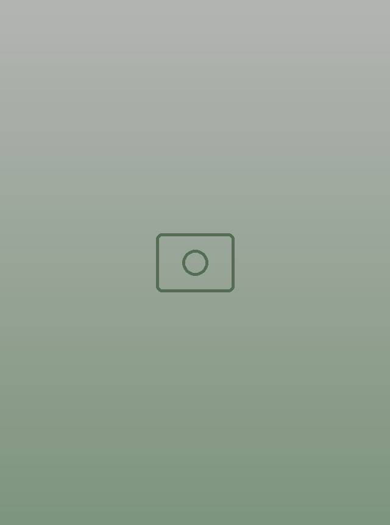
Mariages & fêtes
Dire oui au milieu des paons
Cérémonie sur la pelouse, soirée sous les lumières : un mariage qui ne ressemble à aucun autre.
Dôme écologique · Maison d’hôte · Béja
Nesma, chez soi au cœur de la nature
Des dômes blancs et ocre posés en pleine campagne de Béja, entre champs de tournesols et collines. Pour dormir, se marier, travailler en équipe, ou simplement souffler.
Le lieu
En pleine campagne, à quelques minutes de Béja, Dar Nesma a été construite en dômes : des voûtes arrondies, chaulées de blanc et décorées de motifs noirs, ou enduites d’ocre comme la terre d’ici.
Dedans, des chambres-cocons aux murs courbes. Dehors, la pelouse, la piscine ronde, les palmiers et le silence de la campagne.
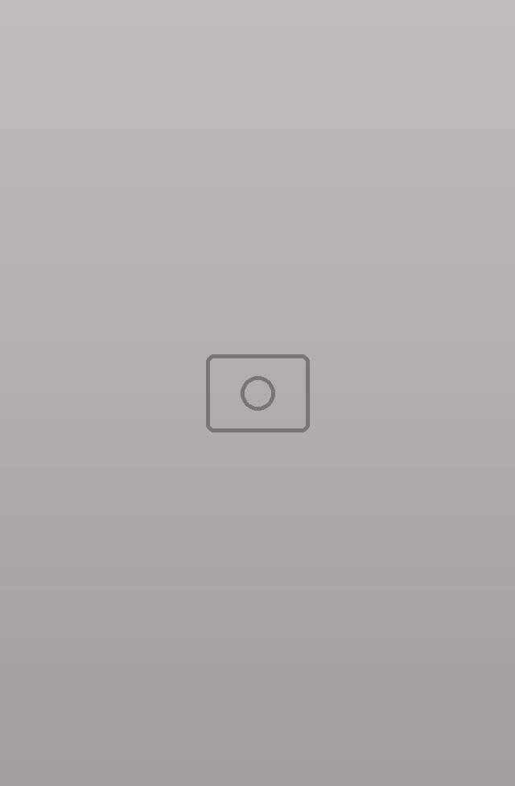
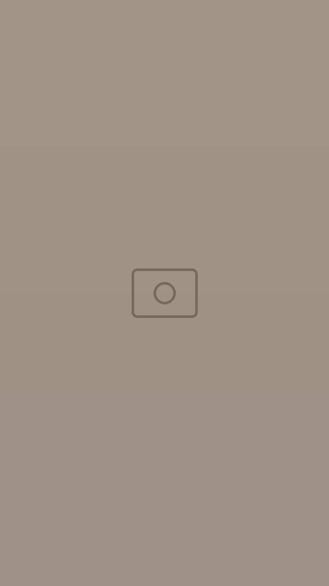
Les dômes
Des espaces arrondis, à l’écart de tout, pour se poser quelques jours dans le calme et la beauté de la nature.
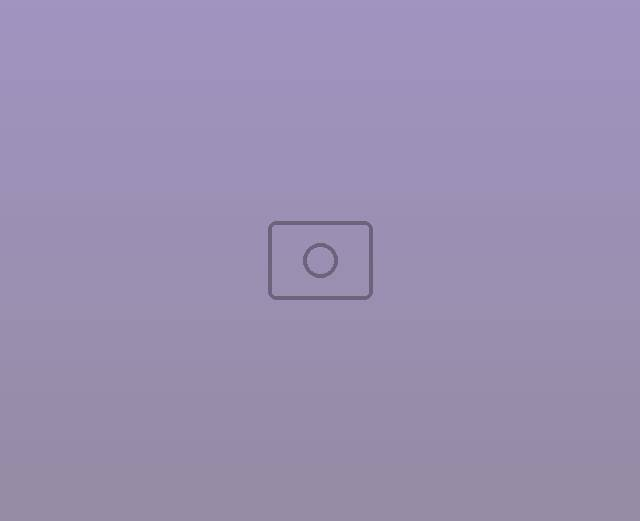
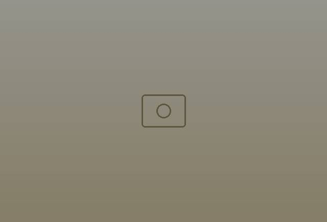
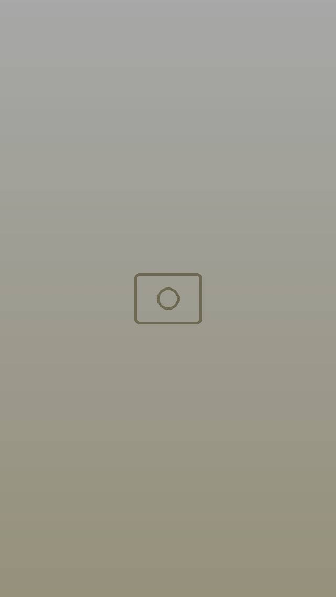
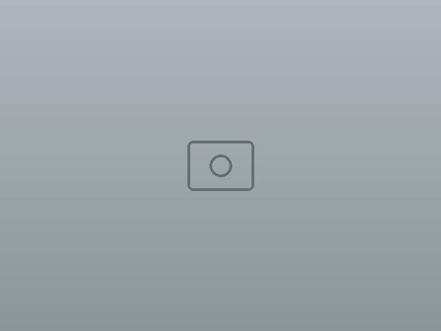
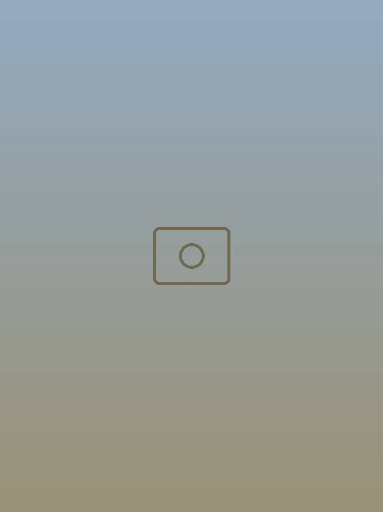
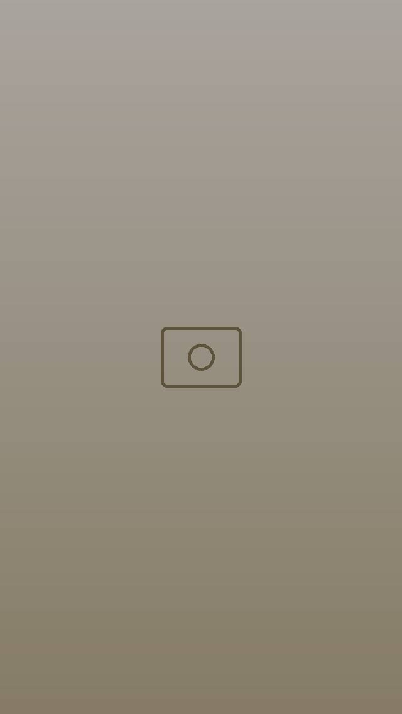
Événements
Les dômes, la pelouse et la lumière de la campagne font de Dar Nesma un lieu à part pour les grands jours.

Cérémonie sur la pelouse, soirée sous les lumières : un mariage qui ne ressemble à aucun autre.
Une journée au vert pour une équipe ou un groupe, loin du bureau, avec randonnées et ateliers.
Créateurs, photographes et vidéastes y ont déjà tourné collections de mode et films : le décor parle de lui-même.
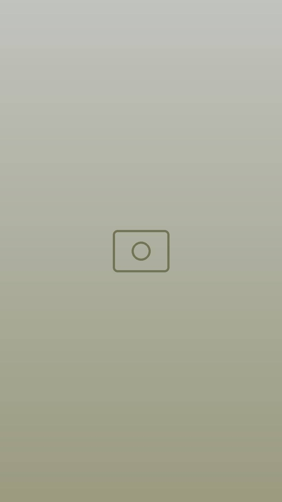
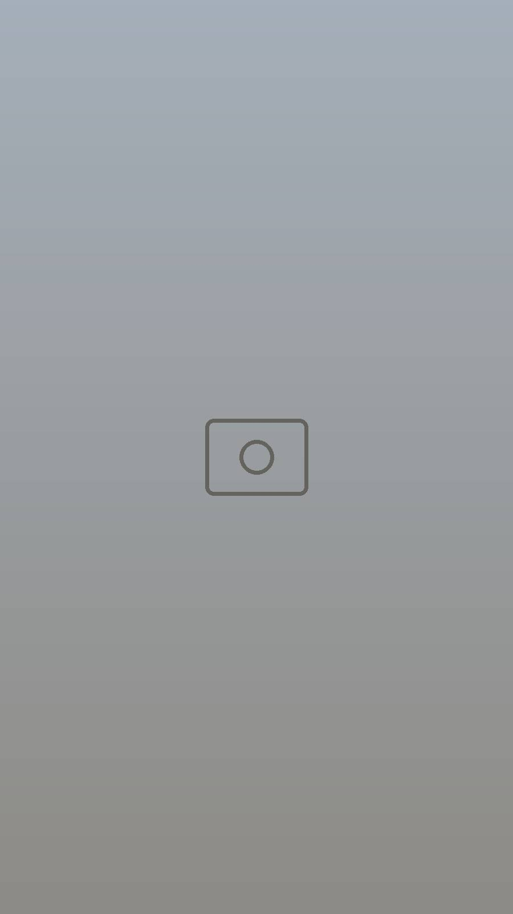
La campagne
Tournesols, champs de blé, oliviers et collines à perte de vue : la région de Béja se découvre à pied, au rythme lent de la campagne.
Réserver
Dar Nesma affiche souvent complet, surtout pendant les vacances : écrivez-nous tôt.